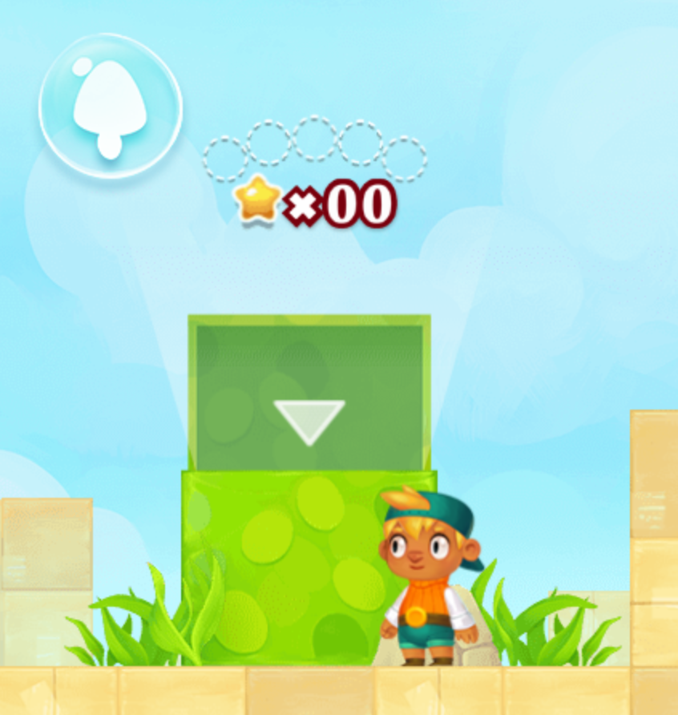
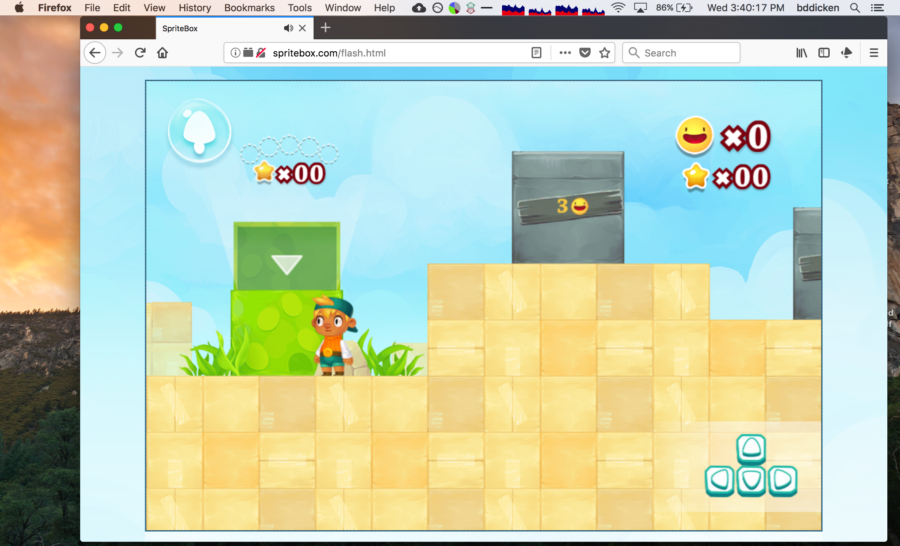

We are going to warm-up our programming/computer-science skills by playing games that help to reinforce programming concepts! SpriteBox is a level-based game that requires the player to use concepts from computer programming to “beat” each level. As the game progresses, the levels get harder (and thus, more computational thinking is required).
Follow this link to get to the game!.
The SpriteBox game has 4 parts, and each part has a series of a few challenges. You will be required to complete all levels in all four. If you have trouble understanding how to play the game, see the reference manual linked here!
After hitting the “play” button of spritebox, you are send to a level-selection page. On this page, there are four boxes, each one representing one of the four sections. You must complete all levels for all four boxes.
For example, here is what it looks like for the first (green) box before any of the levels are completed: 
For each section, you must submit a screenshot with your character standing by the box, showing that all of the levels are unlocked (all of the smiley-faces are showing). For example:

If you’ve never taken a screenshot in your computer before, here’s how you do it on Mac and here’s how you do it on Windows. There are plenty of other instructions online if the above links don’t work. Just Google.
When you take your screenshot, don’t just include the SpriteBox window. Instead, include your entire screen, so that I can see the utility bar at the top or bottom of your screen with the current date, time, etc. (feel free to close personal windows, files, etc). This is to help ensure that you aren’t sharing screenshots amongst yourselves (which would be cheating).
In total, you must submit four screenshots.
You should name each of the screenshots netid-spritebox-1, netid-spritebox-2, netid-spritebox-3, and netid-spritebox-4, but replace netid with your actual UofA netid.
Either before or after completing all of the sections, read through this page: http://spritebox.com/index.html
Write a 150-200 word essay/summary of your experience with SpriteBox. Your summary should answer questions like:
Put your essay into a text file named netid-spritebox-essay.txt, where netid is your actual netid.
This was assigned on 1/10/2018. It is due on 1/19/2018 at 5:00pm.
Turn in each of the files described in the spec (5 total) to the assignment 1 dropbox in D2L before the due date. Make sure to name the files exactly as this document specifies. In general, make sure to follow these instructions precisely. If you don’t, we will deduct points!!!